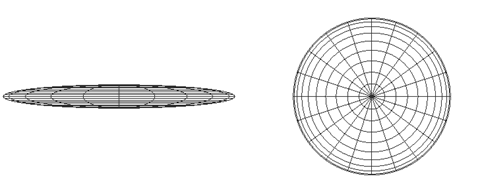
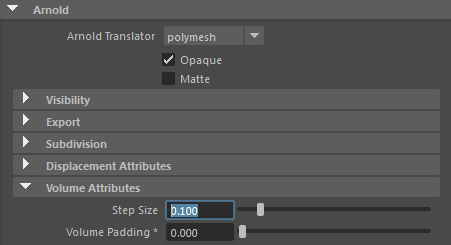
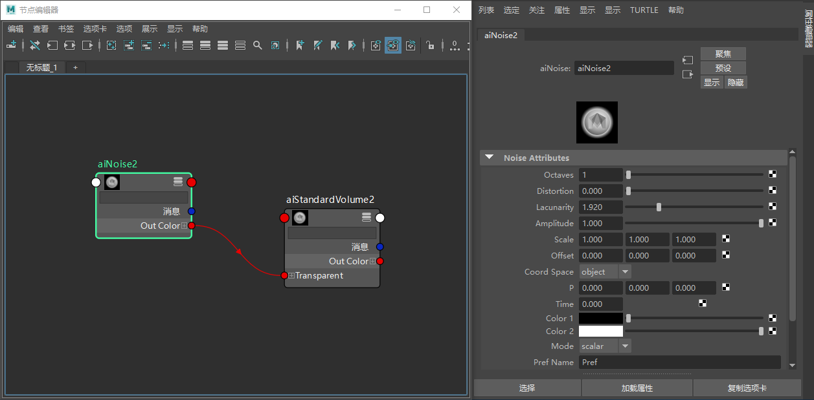
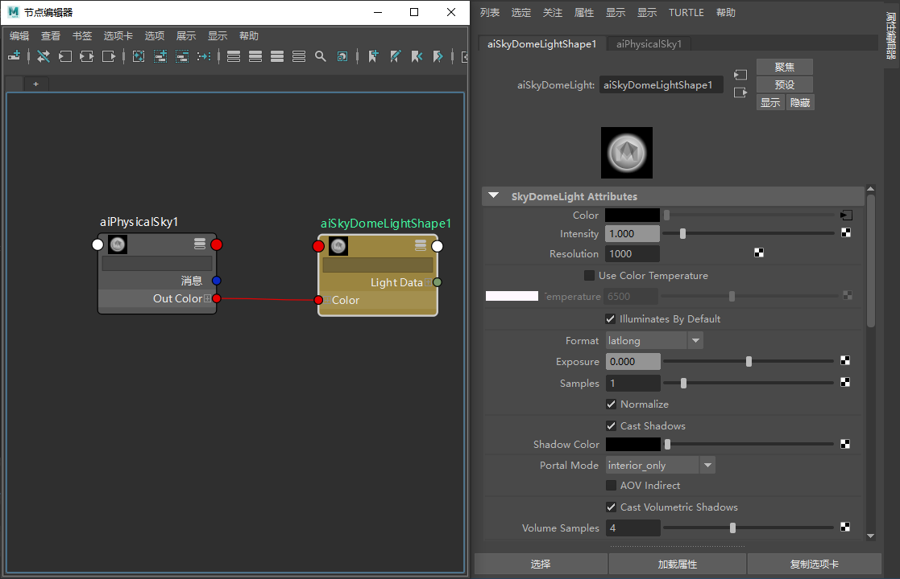

本简单教程演示了如何结合使用 standard_volume 着色器与 Maya 云 3D 节点来创建云效果。可以使用此设置获得多种多云天空。
要下载对应的场景，请单击此处。

step_size 具有一个固定值，因此容器越大，所用的步数越多，渲染花费的时间也越长。还要注意的是，如果步长太小，渲染时间将增加。

球体的 Arnold“体积属性”(Volume Attributes)中的 step_siz
创建一个 standard_volume 着色器，并将它指定给球体。
创建 Maya 云 3D 纹理并将其连接到 standard_volume 着色器的 transmission_weight。为云节点缩小 Maya 3D 纹理节点的比例，以便看到更多细节。

